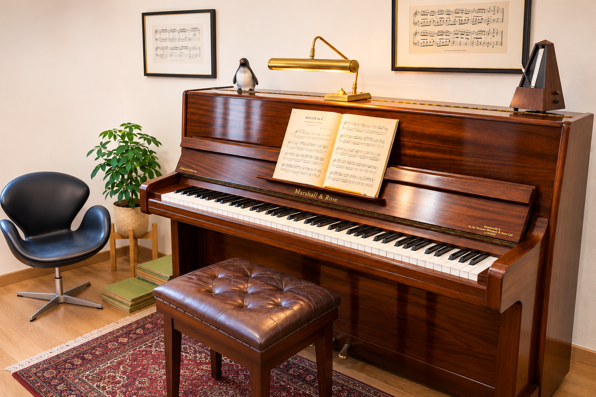
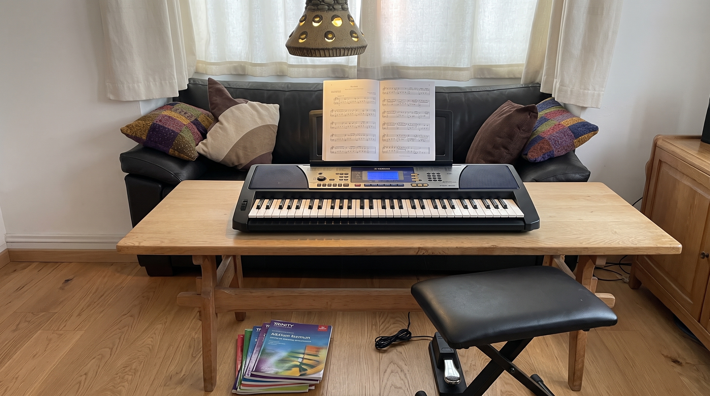

♪
Piano
Individual piano tuition at all levels, including preparation for ABRSM practical examinations. Explore classical music, favourite pieces and music you simply enjoy playing.
Individual tuition · Children & adults · All abilities
David Hayes — over 50 years of teaching experience, including 40 years as Head of Music across five schools.
MA Music Education · BA (Hons) · GRSM (Manchester) · Enhanced DBS checked
In-person lessons at my home in the Reading–Wokingham area, or Zoom lessons wherever you live. Learn for pleasure, examinations or academic study.
Enquire about lessons →

What I teach
From complete beginners to advanced players, I offer lessons for enjoyment and personal progress as well as preparation for graded and school examinations.
Individual piano tuition at all levels, including preparation for ABRSM practical examinations. Explore classical music, favourite pieces and music you simply enjoy playing.
Electronic keyboard tuition for beginners through to advanced pupils, including Trinity electronic keyboard examinations when desired.
Music theory lessons and preparation for Grades 1–5, including Grade 5 tuition for pupils learning other instruments who need it for further graded exams.
Support with school music studies, including performing, composing and listening, tailored to the student’s course and current needs.
Aural skills as part of regular lessons or as separate examination preparation for pupils of other instruments. In-person sessions can complement online lessons.
Face-to-face lessons at my home in the Reading–Wokingham area, with easy parking nearby. Zoom is available for all subjects, wherever you live.
Meet your teacher
I am David Hayes, with over 50 years of experience teaching music and 40 years as Head of Music across five different schools.
My qualifications include an MA in Music Education, BA (Hons) and GRSM (Manchester). I hold an Enhanced DBS check.
My teaching approach
Every pupil is different, so I adapt lessons to individual interests, abilities and musical goals. If one approach proves difficult, I can explain or demonstrate things in another way, drawing on my experience to help pupils understand and progress.
Learning music should be something pupils look forward to. You are welcome to bring along a favourite piece — classical, popular or film music — even when working towards examination pieces.
Parents are encouraged to attend lessons with younger children, helping them support practice at home. Younger pupils may be accepted depending on readiness and the parental support available, particularly between lessons.
Lesson fees
Lessons are normally weekly, Monday to Thursday, broadly following school term time. Pupils can begin whenever they are ready, subject to availability. Fees are paid in advance in blocks of ten lessons, which may run across school terms.
The same prices apply to Zoom and face-to-face tuition. Please enquire about availability and the most suitable lesson length.
Prospective pupils can arrange an initial meeting or trial lesson to discuss interests, goals, equipment and practice expectations. Practice requirements vary according to age, level and circumstances.
If you give at least 48 hours’ notice that you cannot attend, I will normally rearrange the lesson without any extra charge or loss of prepaid lesson credit.
Useful information
Pupils will normally need their own piano or electronic keyboard to practise between lessons. I can advise on suitable instruments during the initial discussion.
Pupils normally buy their own music books, usually following my recommendations, so the material suits their ability and interests.
Yes. Online pupils sometimes arrange an in-person lesson before a practical examination, particularly for additional aural preparation.
Not at all. You can learn purely for pleasure, prepare for ABRSM or Trinity examinations, or get support with GCSE or A-level Music.
Get in touch
Please contact me to enquire about lesson availability and to discuss what you would like to learn. You are welcome to outline your experience, interests or any examination goals.
Face-to-face: at my home in the Reading–Wokingham area (the address is provided privately after contact). Online: Zoom lessons for pupils anywhere.
If I cannot answer, please leave your name and telephone number on the answering machine so I can return your call.
Please include a few details about the pupil and the tuition you are interested in.